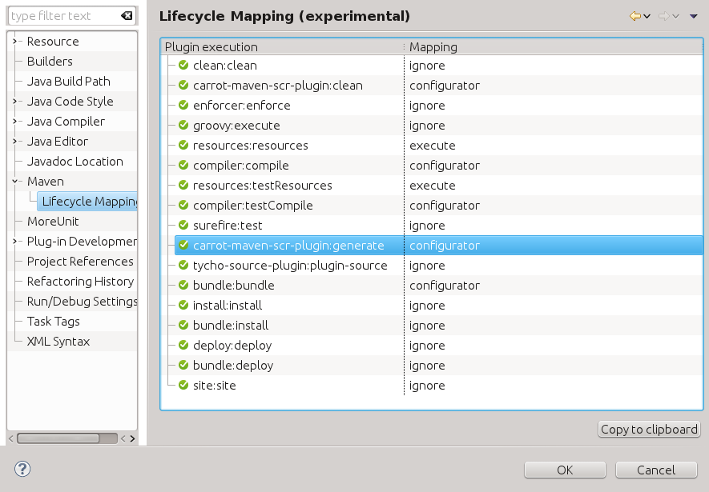

About
Context
OSGI Declarative Sevices (p 297) is good , old , and tried technology, now getting a face lift (p 187) .
Purpose
this plugin replaces popular felix scr annotations framework components,
including osgi annotations , annotations processor , annotations maven plugin
with new OSGI specification compliant (p 187) counterparts.
Motivation
felix scr annotations framework does not integrate well with eclipse interactive development mode:
- very slow
- batch mode only
- no incremental build
- generates single monolititc descriptor file
Repository
maven central has latest version of the plugin
M2E Integration
this plugin comes with a companion m2e maven/eclipse connector plugin
available form the following update site location
when both maven plugin and eclipse plugin are properly installed, you should see the following picture in
Eclipse -> Project -> Properties -> Maven -> Lifecycle Mapping
